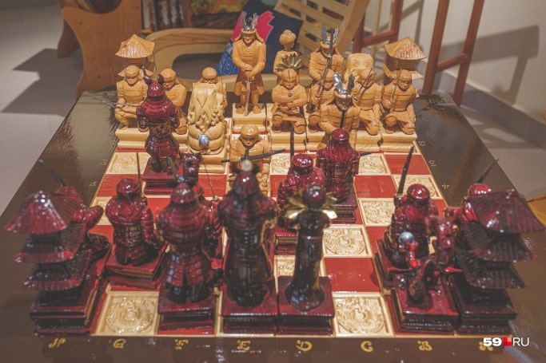

Набор в виде японских самураев и драконов
Стандартный шахматный набор включает в себя игровую доску, 16 пешек белого и чёрного цветов, а также четыре ладьи, четыре коня, четыре слона, два ферзя, два короля белого и чёрного цветов. В шашечный набор входят доска, 12 белых шашек и 12 чёрных. Игровой набор выполнен из дерева, и сделан полностью в ручную.
Размер доски в разложенном виде составляет 52 x 52 кв см. Размер игрового поля составляет 42.5 х 42.5 кв см. Размер клетки составляет 5 х 5 кв см. На поверхность доски нанесено выжигание. Клетки игрового поля разделены между собой прожилками, украшенными узорами выжигания. По краю доски возле игрового поля расположена шахматная нотация. Доска складывается пополам. Створки доски соединены между собой двумя изящными металлическими замками. Внутри доски расположена вставка зеленого цвета с бархатным напылением с отдельными ячейками для каждой фигуры. Толщина доски в сложенном виде 6 см.

Что касается правил этой игры, то здесь можно отметить много интересных моментов. Начнём с того, что шахматная партия играется между двумя противниками. Спортсмены, обдумывая ходы, попеременно перемещают шахматные фигуры по доске, пытаясь добиться наилучшего расположения, “съесть”, как можно больше вражеских фигур, и поставить мат вражескому королю. Кто играет за “белых”, ходит первым. Передвигать фигуры можно только одной рукой. Как правило, в шахматы играют по часам. То есть, за определённый промежуток времени, игрок обязан сделать ход, а затем, нажать кнопку на часах, тем самым оповестив всех, что он закончил. Победителем шахматной игры считается спортсмен, которому удалось с помощью своих шахматных фигур поставить “мат” вражескому королю. Также, победа присуждается одному из игроков, когда второй говорит, что он сдаётся.
Стоимость набора 9000 руб 5300 руб
Что еще у нас вы сможете найти?
Среди сувениров в магазине есть маленькие копии памятника «Пермяк солены уши», подушки с логотипом Перми, большой резной герб Перми, шкатулки, фигурки медведей и большой резной трон. Ассортимент будет постоянно пополняться. Не смутит ли покупателей «карма» таких товаров от осужденных, среди которых есть те, кто отбывают наказание за тяжкие преступления, в ГУФСИН ответили так: «У нас все осужденные могут исповедаться у священника. Кроме того, когда человек делает изделие с любовью, вкладывает в него душу, он не просто работает руками, а работает с душой. Поэтому по карме мы можем сказать, что когда человек делает это с любовью, то карма только светлая». Кроме того, стоимость товаров в магазине гораздо ниже, чем в обычных магазинах, а качество ничуть не уступает, отметили в ведомстве.